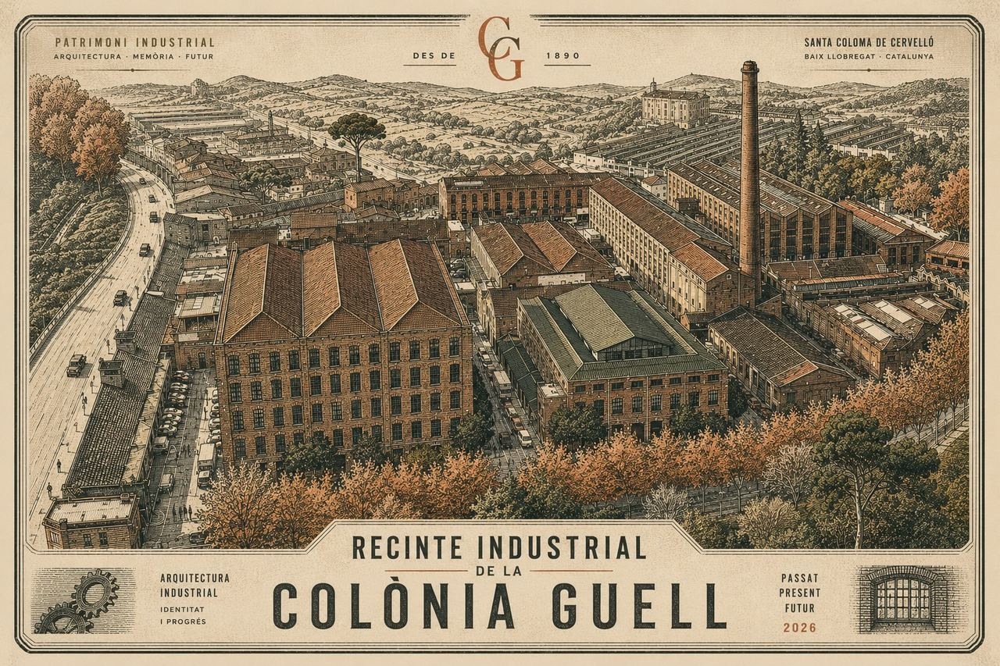

Associació de propietaris i industrials

L'Associació representa els propietaris i les indústries del Recinte des de fa més d'un segle. Vetllem pel manteniment, la seguretat i el patrimoni d'un dels conjunts fabrils modernistes més singulars de Catalunya.
En curs · Procés urbanístic
Modificació puntual del PGM
L'Associació participa al Grup Motor del procés participatiu impulsat per INCASÒL i el Consorci. Seguim de prop els estudis tècnics i la conservació dels elements patrimonials del Recinte.
Actualitat
Notícies i avisos
L'Associació entra al Grup Motor de la Modificació puntual del PGM
El procés participatiu impulsat per INCASÒL i el Consorci de l'Entorn de la Colònia Güell entra en una fase decisiva. Avancem com queda configurada la representació de l'Associació.
Constitució de la nova Junta Directiva
L'Assemblea ha confirmat la composició de la Junta per al nou mandat: àrees de treball, distribució de responsabilitats i criteris de funcionament.
Calendari de manteniments del 2n trimestre
Revisions previstes a la porta principal, sistemes de CCTV i instal·lacions comunes. Detall del calendari i contactes per a incidències.
Reflexions sobre el mur perimetral del Recinte
Una primera lectura — encara no posició formal de la Junta — sobre la importància patrimonial, jurídica i pràctica de conservar el mur original.
(arxiu o fotografia recent)
Sobre el Recinte
Un patrimoni industrial encara viu
El Recinte Industrial de la Colònia Güell forma part d'un dels conjunts modernistes més singulars de Catalunya. La fàbrica original, projectada el 1890 per encàrrec d'Eusebi Güell, conserva avui edificis, traces i el mur perimetral del projecte original.
Al seu costat, la Cripta de Gaudí —Patrimoni Mundial de la UNESCO— recorda que aquesta no és una propietat industrial qualsevol: és un fragment de la història del país que continua tenint un ús productiu.
L'Associació representa els propietaris i les empreses que avui en garanteixen aquest doble valor: la seva activitat econòmica i la seva integritat patrimonial.
El Recinte en xifres
Una propietat industrial activa, en un entorn protegit.
1890
Any de fundació
Promogut per Eusebi Güell com a part del projecte de la Colònia.
~36 ha
Conjunt de la Colònia
Inclou recinte fabril, habitatges i equipaments.
UNESCO
Cripta de Gaudí
Patrimoni Mundial des del 2005, en el mateix entorn.
2026
Nova Junta
Mandat actual amb set àrees de responsabilitat.
Empreses al Recinte
Un entorn productiu amb caràcter propi.
Al Recinte hi conviuen activitats industrials, tallers d'oficis, serveis i empreses creatives. Consulta el directori i les condicions per a noves implantacions.
Història i patrimoni
El Recinte Industrial
de la Colònia Güell
Un conjunt fabril fundat el 1890 com a part del projecte d'Eusebi Güell, encara avui en ús i lligat a un dels entorns modernistes més singulars de Catalunya.
Capítol primer
Origen i història
El 1890, Eusebi Güell impulsa el trasllat de la seva fàbrica tèxtil a Santa Coloma de Cervelló, donant origen a la Colònia Güell: un projecte industrial i social inspirat en les colònies obreres de l'època, però amb una ambició cultural i arquitectònica que el faria singular.
El recinte fabril original concentrava la producció tèxtil; al seu voltant es van bastir habitatges per als treballadors, escola, ateneu i la cèlebre cripta projectada per Antoni Gaudí —avui Patrimoni Mundial de la UNESCO.
L'activitat tèxtil va perdurar fins ben entrat el segle XX. Quan va cessar, el recinte fabril es va anar reconvertint en un espai d'usos industrials i de serveis múltiples, amb propietat fragmentada entre diversos titulars. L'Associació de Propietaris i Industrials es va constituir per gestionar de manera ordenada aquest espai compartit i defensar-ne els interessos comuns.
Capítol segon
Patrimoni i arquitectura
El conjunt manté nombrosos elements del projecte original: edificis fabrils, traces urbanístiques i, de manera especialment significativa, el mur perimetral que delimita el recinte des de la fundació.
El llenguatge arquitectònic combina la tradició industrial catalana de finals del XIX amb solucions característiques del modernisme: ús expressiu del maó vist, ferro forjat, i una atenció als detalls que fa del Recinte un cas d'estudi en si mateix.
L'Associació considera la conservació d'aquests elements no només una qüestió cultural, sinó també identitària, jurídica i pràctica: el caràcter del Recinte és inseparable del seu valor com a propietat compartida.
Capítol tercer
L'entorn
El Recinte forma part d'un conjunt patrimonial més ampli que inclou la Cripta de Gaudí, el nucli urbà de la Colònia (declarat Bé Cultural d'Interès Nacional) i els espais agrícoles i naturals del voltant.
La gestió del conjunt implica diverses administracions —Ajuntament de Santa Coloma de Cervelló, Àrea Metropolitana de Barcelona, Generalitat de Catalunya— i el Consorci de l'Entorn de la Colònia Güell, organisme creat per coordinar la protecció i la dinamització del conjunt.
L'Associació dialoga regularment amb totes aquestes institucions per garantir que els interessos dels propietaris i industrials es tenen en compte en les decisions que afecten el Recinte.
Capítol quart
Un recinte productiu, avui
Activitat econòmica
Empreses i tallers
Indústries lleugeres, tallers d'oficis, magatzems, serveis i activitats creatives.
Vida diària
Accés i serveis
Control d'accés, vigilància 24/7, manteniment d'instal·lacions comunes i jardins.
Cultura
Festa Modernista
Cada any, el Recinte participa en l'esdeveniment cultural que celebra el llegat de la Colònia.
Visites
Vols visitar el Recinte?
El Recinte Industrial és, en primer lloc, un espai privat de treball. Tot i això, periòdicament obrim l'accés al públic en el marc d'esdeveniments culturals i jornades de portes obertes.
Per a visites de grups acadèmics, recerques o periodistes, es pot sol·licitar autorització a la Junta amb antelació suficient.
Com arribar
Recinte Industrial
Carrer de la fàbrica
08690 Santa Coloma de Cervelló
(Baix Llobregat)
Transport
FGC línia S4 / S8 / R5 / R6 (estació Colònia Güell)
Bus L67
Cotxe: sortida Sant Boi · A2/AP-2
Òrgan de govern
La Junta Directiva
L'Assemblea de propietaris ha confirmat al març de 2026 la composició de la Junta per al nou mandat. Set àrees de responsabilitat, dos suports tècnics amb veu però sense vot, i un principi vertebrador: la simplicitat.
Composició del mandat 2026
Membres i àrees de responsabilitat
President
Josep Maria Martínez-Ribes
Representació institucional de l'Associació, coordinació de la Junta i interlocució amb les administracions.
president@recinteindustrial-cg.cat
Vicepresidència
Rosa Maria Espinosa
Infraestructures i manteniment
Tresoreria
Armand Soriano
Gestió econòmica i pressupost · comite.events
Secretaria · veu sense vot
Carles Creus
Acords, actes i assessoria fiscal · Creus Ventura Assessors
Vocalia · contractació
Carles Querol
Contractes i proveïdors · monterri.es
Vocalia · comunicació
Albert Pecanins
Comunicació i imatge institucional
Vocalia · web i tecnologia
Bernat Terrés
Web, eines digitals i sistemes · BlackLink
Vocalia · seguretat
Joan R. Fuertes
Seguretat, control d'accés i CCTV · qnv.com
Vocalia tècnica · veu sense vot
Jordi Segura Tejedor
Triatge legal i suport jurídic · bellaurora.com
Principis de funcionament
Simplicitat radical, decisions ràpides.
Tots els membres de la Junta tenen agendes professionals exigents. El nostre funcionament està dissenyat per minimitzar la sobrecàrrega i centrar el temps en allò que aporta valor.
i.
Reunions trimestrals
Reunions presencials amb un sostre de 60 minuts. Ordre del dia tancat amb antelació, acords clars al final.
ii.
Comunicacions a Teams
Tota la conversa de Junta passa per Microsoft Teams: si no hi és, no existeix. Tres canals diferenciats: General, Xat de Junta, Legal.
iii.
Tasques a Planner
El Planner s'organitza per àrees funcionals, no per estats. Cada vocalia gestiona la seva columna.
iv.
Resoldre primer, reunir després
Si una qüestió es pot tancar en tres missatges, no convoca reunió. Les reunions són per a temes que en necessiten.
v.
Disciplina epistèmica
En els documents institucionals distingim sempre fets confirmats, inferències raonables i punts no confirmats.
vi.
Veu i representació
Distingim sempre les posicions personals dels membres de les posicions formals adoptades col·legiadament per la Junta.
Transparència
Documents institucionals
Els documents privats i operatius de la Junta es troben a l'àrea privada. Aquí publiquem els documents d'abast institucional o públic.
Estatuts vigents de l'Associació
Modificació aprovada per l'Assemblea el maig de 2021 sobre la base dels estatuts de 2014 i el text fundacional de 1979.
Pla d'organització de la Junta
Document de referència que descriu àrees, criteris de funcionament i circuits de decisió per al mandat actual.
Sol·licituds d'informació al Consorci i INCASÒL
Cartes formals enviades a cinc organismes públics en el marc del procés de la Modificació puntual del PGM.
Actualitat de l'Associació
Notícies i avisos
Comunicats institucionals, avisos operatius, actualització dels processos urbanístics i activitat cultural del Recinte.
L'Associació entra al Grup Motor de la Modificació puntual del PGM
El procés participatiu impulsat per INCASÒL i el Consorci de l'Entorn de la Colònia Güell entra en una fase decisiva per al futur urbanístic del Recinte.
Sol·licituds formals d'informació a cinc organismes públics
L'Associació ha enviat cartes a INCASÒL, el Consorci, l'Ajuntament, l'AMB i el Departament de Cultura demanant accés als estudis tècnics que sustenten la MpPGM.
Constitució de la nova Junta Directiva
L'Assemblea ha confirmat la composició de la Junta per al nou mandat: àrees de treball, distribució de responsabilitats i criteris de funcionament.
Calendari de manteniments del 2n trimestre
Revisions previstes a la porta principal, sistemes de CCTV i instal·lacions comunes. Detall del calendari i contactes per a incidències.
Reflexions sobre el mur perimetral del Recinte
Una primera lectura — encara no posició formal de la Junta — sobre la importància patrimonial, jurídica i pràctica de conservar el mur original de 1890.
Configuració de la nova plataforma operativa de Junta
Microsoft Teams es converteix en el canal únic de coordinació interna, organitzat en tres canals: General, Xat de Junta i Legal.
Festa Modernista 2026: el Recinte hi participa
Avancem el calendari i el dispositiu d'accés especial per a la celebració anual del llegat modernista de la Colònia Güell.
Renovació del contracte de seguretat i CCTV
L'àrea de Seguretat ha completat la revisió del contracte amb Open Service per al manteniment dels sistemes de CCTV i control d'accés.
L'Associació entra al Grup Motor de la Modificació puntual del PGM
12 d'abril de 2026 · Per la Junta Directiva · 4 minuts de lectura
El procés participatiu impulsat per INCASÒL i el Consorci de l'Entorn de la Colònia Güell entra en una fase decisiva. L'Associació de Propietaris i Industrials ha confirmat la seva participació al Grup Motor, l'òrgan que farà el seguiment tècnic i polític de la Modificació puntual del Pla General Metropolità (MpPGM).
La MpPGM afecta tant el Recinte Industrial com la finca SC-5. Entre els documents tècnics que sustenten el procés hi ha l'estudi de mobilitat (ICSOL-2026-3), la documentació ambiental (ICSOL-2026-2), l'estudi històric-arquitectònic (ICSOL-2024-44) i el projecte d'urbanització (ICSOL-2026-9).
L'Associació ha sol·licitat formalment a cinc organismes públics —INCASÒL, el Consorci, l'Ajuntament de Santa Coloma de Cervelló, l'Àrea Metropolitana de Barcelona i el Departament de Cultura de la Generalitat— l'accés a aquesta documentació, així com el calendari procedimental complet del procés.
Què hi ha en joc
El procés determinarà aspectes claus per als propietaris: els usos admissibles, els paràmetres edificatoris, les obligacions de cessió i urbanització, i el règim de protecció dels elements patrimonials del Recinte —entre ells, el mur perimetral original de 1890.
S'ha elaborat una primera reflexió sobre la conveniència de conservar el mur, amb arguments històrics, arquitectònics, jurídics, de seguretat i econòmics. Aquest document, de moment, no constitueix posició formal de la Junta, que valorarà el contingut i decidirà si l'adopta com a posició institucional.
Pròxims passos
L'Associació seguirà participant a les sessions del Grup Motor i mantindrà informats propietaris i industrials de l'evolució del procés. Es preveu emetre comunicats periòdics a través d'aquest mateix canal i convocar trobades específiques quan calgui.
Els propietaris que vulguin aportar reflexions o documentació al procés poden fer-ho arribar a la Junta a través de l'àrea privada o per correu electrònic.
Notícies relacionades
Procés en curs
Modificació puntual
del Pla General Metropolità
L'instrument urbanístic que determinarà el futur del Recinte i la finca SC-5. Segueix-ne l'evolució, els documents tècnics i la posició de l'Associació.
Una mirada general
Què és la MpPGM?
La Modificació puntual del Pla General Metropolità és l'instrument que la Generalitat —a través d'INCASÒL— i el Consorci de l'Entorn de la Colònia Güell impulsen per redefinir el règim urbanístic del Recinte i de la finca veïna SC-5.
El resultat afectarà aspectes essencials per als propietaris: usos admissibles, paràmetres edificatoris, condicions d'urbanització i règim de protecció patrimonial.
Cronologia del procés
Estat actual i fites previstes.
2024–2025
CompletatEstudis previs
Encàrrec dels estudis tècnics: històric-arquitectònic (ICSOL-2024-44), mobilitat, ambiental i projecte d'urbanització.
Q1 2026
En cursConstitució del Grup Motor
Procés participatiu obert. L'Associació ha confirmat la seva incorporació al Grup Motor i ha sol·licitat l'accés a la documentació tècnica.
Q2–Q3 2026
PrevistSessions tècniques i debat
Sessions de treball amb propietaris, administracions i tècnics. Debat sobre usos, paràmetres i conservació patrimonial.
2027
PendentAprovació inicial i tramitació
Tramitació administrativa, exposició pública i aprovació definitiva. Calendari encara per confirmar.
Documentació
Estudis i expedients tècnics
Aquests són els documents tècnics que sustenten el procés. L'Associació ha sol·licitat l'accés formal a tots ells.
ICSOL-2024-44
Estudi històric-arquitectònic
Anàlisi del valor patrimonial i dels elements a protegir.
ICSOL-2026-2
Documentació ambiental
Avaluació ambiental estratègica del procés.
ICSOL-2026-3
Estudi de mobilitat
Anàlisi d'accessos, circulació i transport.
ICSOL-2026-9
Projecte d'urbanització
Definició tècnica de les obres d'urbanització.
Posicionament
Què defensem
L'Associació participa al procés amb tres prioritats clares:
i.
Garantir la viabilitat de l'activitat actual
Els propietaris i industrials ja en actiu han de poder continuar la seva activitat sense ruptures injustificades en els usos.
ii.
Conservar el patrimoni significatiu
El mur perimetral, els edificis principals i les traces originals del recinte fabril són elements identitaris del conjunt que cal preservar.
iii.
Equilibrar càrregues i beneficis
Les obligacions de cessió, urbanització i adaptació han de ser proporcionades i tenir en compte la realitat dels propietaris actuals.
Vols aportar la teva opinió?
Si ets propietari o industrial del Recinte i tens reflexions a aportar al procés, fes-les arribar a la Junta.
Directori
Empreses al Recinte
Una vintena d'activitats conviuen al Recinte: indústria lleugera, tallers d'oficis, magatzems, serveis tècnics i empreses creatives. Aquí en pots consultar el directori obert i les condicions per a noves implantacions.
Els registres d'aquesta maqueta són il·lustratius. El directori real es construirà amb la informació facilitada per cada empresa.
Indústria · metal·lúrgia
Empresa industrial A
Mecanització de precisió i fabricació de components.
Nau 4 · ext. 142
Indústria · alimentació
Empresa F
Producció artesanal i envasat de productes alimentaris.
Nau 8 · ext. 218
Indústria · Fotònica Integrada, Tecnologies d’espai
OrbitHub S.L.
Plataforma d’infraestructura d’R+D per al desenvolupament de fotònica integrada i tecnologies d’espai.
Nau J01 · dep. 61
Serveis tècnics
Empresa de serveis E
Instal·lacions elèctriques i automatització industrial.
Nau 9 · ext. 245
Logística
Empresa logística C
Magatzem i distribució per a comerç especialitzat.
Nau 11 · ext. 311
Tallers d'oficis · ferro
Taller G
Forja i ferreteria d'art per a restauració arquitectònica.
Nau 3 · ext. 124
Tallers d'oficis · fusta
Taller B
Fusteria i mobiliari a mida per a particulars i interioristes.
Nau 7 · ext. 207
Creativa · disseny
Estudi D
Estudi d'arquitectura i disseny industrial.
Nau 5, planta 1 · ext. 158
Creativa · audiovisual
Estudi H
Plató fotogràfic i de vídeo, lloguer d'espais creatius.
Nau 6 · ext. 187
Noves implantacions
Tens interès a instal·lar la teva activitat al Recinte?
Quan hi ha disponibilitat de naus o espais, el procediment habitual és contactar directament amb el propietari de la unitat corresponent. L'Associació pot orientar sobre les condicions generals del Recinte, els usos compatibles i els serveis comuns disponibles.
Tingues en compte que el Recinte es troba en un entorn protegit patrimonialment i que algunes activitats requereixen autoritzacions específiques per part de les administracions competents.
Posa't en contacte
Contacte
Tria el canal més adequat segons el motiu del contacte. Si ets propietari, l'àrea privada és sovint la via més ràpida per a temes interns.
Formulari general
Escriu-nos
En enviar aquest formulari acceptes la nostra política de privacitat. Les teves dades només s'utilitzaran per respondre la teva consulta.
Contactes específics
Vies directes
Presidència
Representació institucional, premsa, administracions.
president@recinteindustrial-cg.cat
Secretaria
Documentació, acords, qüestions formals.
secretaria@recinteindustrial-cg.cat
Manteniment i incidències
Avaries, instal·lacions, control d'accés.
manteniment@recinteindustrial-cg.cat
Adreça postal
Recinte Industrial
de la Colònia Güell
08690 Santa Coloma de Cervelló
(Baix Llobregat)
Mapa de localització
Santa Coloma de Cervelló · Baix Llobregat
Àrea privada
Accés per a propietaris
Documents, comunicacions internes, estat de quotes i incidències.
Primer accés?
Si encara no tens credencials, sol·licita-les a la Secretaria de la Junta. Contactar →
Àrea privada
Bon dia, Josep Maria.
Propietari · Nau 4 · darrer accés ahir a les 18:24
Pendents
3
accions per atendre
Quotes
Al corrent
propera: 1 jul 2026
Incidències
1
obertes a la teva nau
Documents nous
2
des del darrer accés
La teva veu
Comunicar i proposar
Manteniment i seguretat
Comunicar un desperfecte
Notifica una incidència a una zona comuna del Recinte. Tria el tipus d'una llista predefinida i descriu-la breument.
Obrir formulari →Idees i millores
Proposar una millora
Suggereix millores estructurals, funcionals, activitats o iniciatives. La Junta revisa i respon totes les propostes.
Obrir formulari →Pendents d'atenció
Què necessita la teva resposta
Aportacions al document de bases
Termini per a aportacions: 30 d'abril
Acta de la Junta del 28 de març — confirmar lectura
Pendent de validació
Avís de tall puntual de subministrament — 22 abr
Confirmar recepció
Comunicacions recents
De la Junta i del Recinte
Resum de la sessió del Grup Motor de la MpPGM
Acta interna. Conclusions de la primera sessió tècnica.
Calendari d'audiències judicials del 2n trimestre
Comunicació a propietaris afectats. Seguiment confidencial.
Constitució de la nova Junta Directiva — comunicat
Composició completa, àrees de responsabilitat i canals de contacte.
Manteniment i seguretat
Comunicar un desperfecte
Aquest formulari serveix per notificar incidències a les zones comunes del Recinte: vialitat, il·luminació, tancaments, vigilància, neteja i altres. La Junta i el servei de manteniment reben l'avís en directe.
Idees i millores
Proposar una millora
Aquest formulari recull propostes obertes: millores estructurals, funcionals, activitats, iniciatives de convivència o qualsevol idea que pugui fer del Recinte un lloc millor. La Junta revisa i respon totes les propostes rebudes.